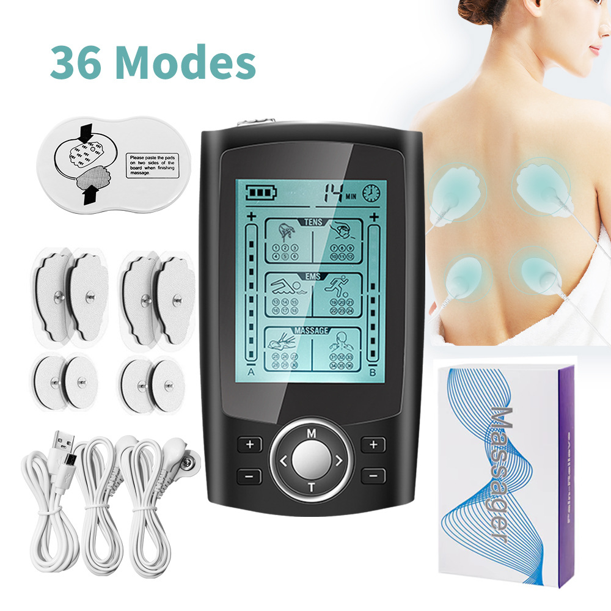
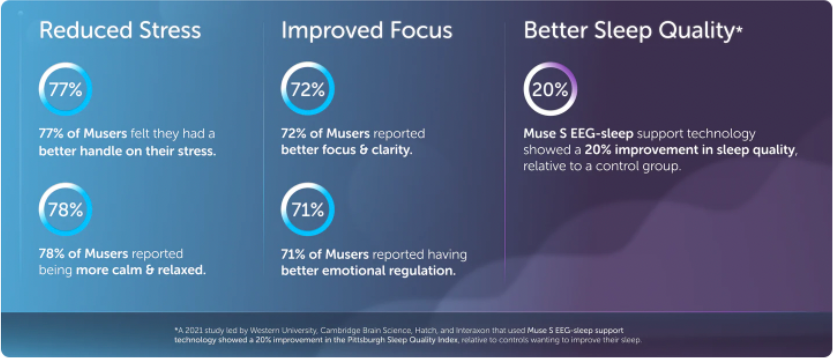
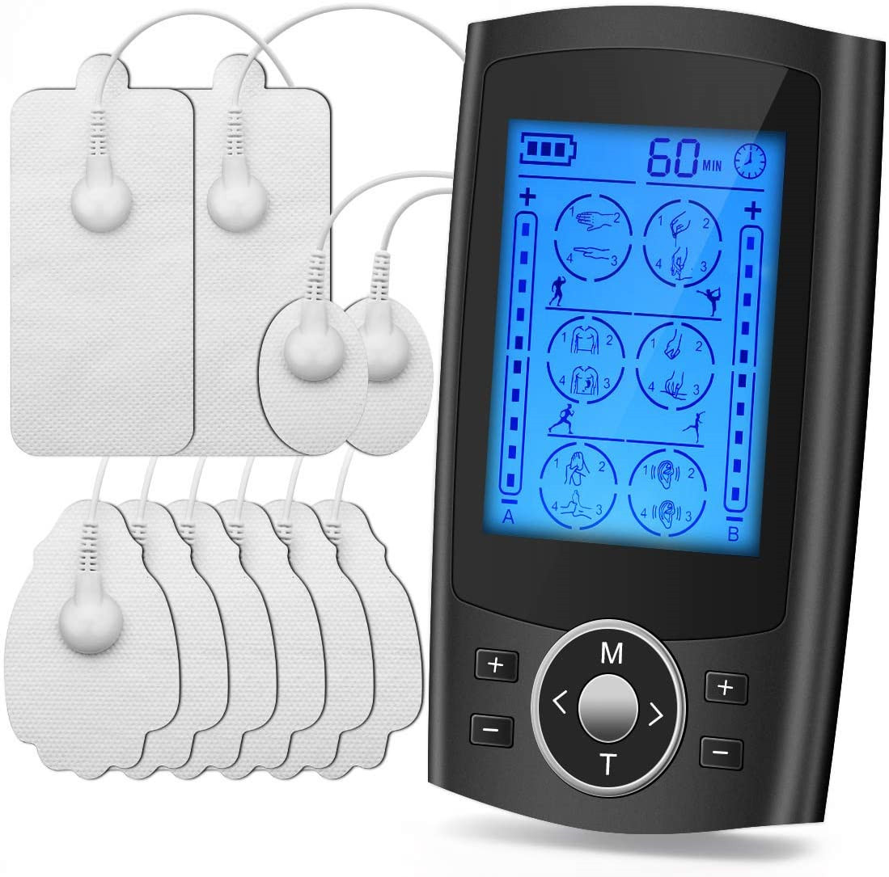

“I've rediscovered the joy of pain-free walks with my Dynamis massager! Not only has it alleviated my foot pain, but it's also brought a newfound freedom to my movements. An absolute game-changer!” - Hannah S.
⭐️⭐️⭐️⭐️⭐️ 2304 Reviews
Name: Dynamis
Price: 59.99
199.99
Sale price
Hurry up! Offer ends soonUnlock Pain-Free Legs in Just 15 Minutes!
Welcome to a world where your legs and feet can feel blissfully pain-free in just 15 minutes a day! Our easy-to-use massager sends gentle pulses to your muscles, melting away tension and bringing instant comfort.
- Ease Various Pains: Say goodbye to Plantar Fasciitis, Neuropathy, and inflammation.
- Support for High Blood Pressure: A gentle approach to managing your wellness.
- Less Swelling, More Moving: Quickly reduce swelling and boost your blood flow.
- Feel the Difference Instantly: Nearly all users (96.6%!) felt immediate relief.
- Try Risk-Free: Enjoy a 45-day, hassle-free money-back guarantee.
- Easy and Portable: Take your lightweight, easy-to-use pain relief wherever you go
Engineered & Endorsed by Doctors: Your Pathway to Proven Pain Relief
TENS/EMS Massager - meticulously designed by a top-tier podiatrist to deliver the relief you crave, exactly when you need it. Esteemed in the professional sphere and recommended for:
- Individuals enduring foot pain from extensive standing or sitting.
- Those navigating the trials of foot and leg neuropathy.
- Diabetics, aiding enhanced blood circulation and averting foot issues.
- Sufferers of venous insufficiency.
- Anyone experiencing plantar fasciitis, cramps, osteoarthritis-related discomfort, or additional foot and leg pains.
All at an investment that’s less than 1/5 the price of a single therapeutic session, offering enduring results that will empower your every step, for life.
22,394,946
Users have completed over 20 million Dynamis sessions
Refresh Your Legs & Feet, Naturally and Safely!
Discover a realm of effortless leg and foot rejuvenation with our cutting-edge technology, harmonizing deep massages with instant relief from cramps, swollen ankles, stiffness, and foot soreness. Our electrical pulse technology not only invigorates your blood circulation but also diminishes varicose veins' appearance, granting your legs a wonderfully light and liberated feeling.
- Banish Cramps: Provide instant and effective relief from painful cramps
- Beauty and Comfort: Erase water retention and cellulite, enhancing both your legs' look and feel.
- Sleep Soundly: Improved sleep thanks to relief from nocturnal leg pain and a soothed nervous system.
- Neuropathy No More: Find comfort from neuropathic pain while supporting cellular regeneration and restoring nerve function.
- FDA-Approved & Side-Effect Free: Safe, reliable, and clinically approved relief
*Note: Not recommended for individuals with pacemakers or pregnant women.
How customers feel after using Dynamis
- 98% Instant pain relief
- 98% of Dynamis users felt they had instant relief of pain
- 80% Reduced stress
- 80% of Dynamis users felt they had better handle on their stress
- 40% Better Sleep Quality
- 40% of Dynamis users could sleep better and longer due to reduced pain
Say Farewell to Swollen Calves and Ankles Once and For All
Step into a world where pain is a distant memory, with our massager that does more than just provide a momentary respite. Using the pioneering TENS and EMS technology, it tackles pain right where it originates.
Immerse yourself in a wave of unique, specially-formulated pulses that do more than just soothe - they ignite your blood circulation, target the precise nerves in your feet, and encourage the repair of damaged cells
Embrace a technology that:
- Provides immediate pain alleviation
- Accelerates healing through enhanced blood flow
- Bolsters strength, flexibility, and mobility
- Revitalizes the health of your feet
- Minimizes swelling and inflammation
What Do Our Customers Say
- Hannah S.
“I've rediscovered the joy of pain-free walks with my Dynamis massager! Not only has it alleviated my foot pain, but it's also brought a newfound freedom to my movements. An absolute game-changer!”
- Gary L.
“Initially skeptical, I'm now a believer. After several uses of the massager, my neuropathy pain has significantly subsided. It’s become an essential part of my pain management routine.”
- Mia T.
“Foot care is paramount as a diabetic. This massager has not only offered relief but also visibly enhanced the health of my feet. It's user-friendly and extraordinarily effective for my circulation!”
- Dave P.
“This TENS Massager has been a blessing for my plantar fasciitis. Now I can commence my day without the familiar first-step pain. A must-have for anyone battling heel pain!”
- Rebecca N.
“Suffering from venous insufficiency, I found unexpected comfort and reduced swelling in my legs thanks to this massager. It’s soothing and remarkably efficient – I can’t thank you enough!”
- Anita B.
“I used to end every workday with aching feet and legs. Since incorporating this massager into my evening routine, I’ve waved goodbye to pain and hello to restful nights!”
- James H.
“My leg cramps were affecting my sleep drastically. The first night using the massager, I slept through without a cramp in sight. The relief and rested mornings have been incredible!”
- Diana F.
“My osteoarthritis-related pain in the legs has been notably alleviated since using the TENS massager. Not only pain relief but the peace of mind it has given me is immeasurable.”
- Eduardo M.
“Being on my feet all day at work resulted in unbearable foot pain. This massager has offered such profound relief, I've recommended it to all my colleagues. A real life-saver!”
- Lila P.
“I was regularly visiting a therapist for my foot pain until I found this massager. The convenience and lasting relief it provides while I'm at home is unparalleled. It’s like having a professional treatment anytime I want!”